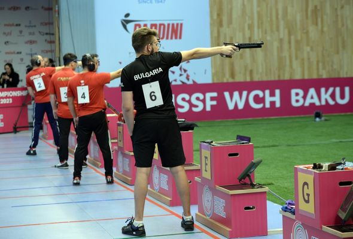
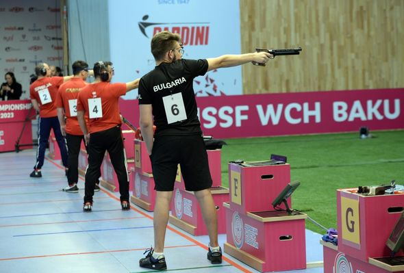

Bakıda keçirilən atıcılıq üzrə 53-cü dünya çempionatının birinci yarışında Paris-2024 Yay Olimpiya Oyunlarına ilk lisenziyalar oynanılıb. “Report”un məlumatına görə, 10 metr məsafəyə pnevmatik tapançadan atəş üzrə kişilər arasında yarış iştirakçılara dörd lisenziya qazandırıb. Çinli qızıl medalçı Boven Janq, bürünc medalın bolqarıstanlı sahibi Kiril Kirov ilə yanaşı, finala yüksələn, lakin qaliblər arasında olmayan İsveçrə təmsilçisi Ceyson Solari və almaniyalı Robin Uolter də olimpiadaya lisenziya əldə ediblər.
 
